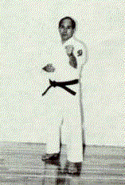
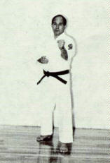
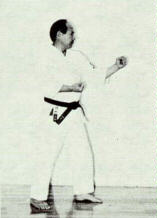
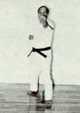
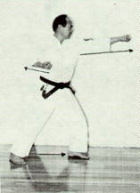
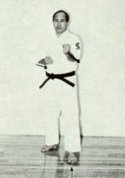
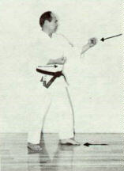

|
DEMONSTRATED BY SENSEI KUNIO MURAYAMA, 7TH DAN JKF SHITO-KAI.Mae Te Tsuki (Jodan)Lead-hand (forward hand) jab-punch.  A BREAKDOWN OF THE TECHNIQUE FOLLOWS... (1)   (2)   (3)  
References/Bibliography Photographs by Ing. Antonio Rodriguez Gonzalez, excerpted with permission from Karate-do Shito-Ryu Shito-Kai Mexico - Manual Practico - 1986, Ing. Jose Luis Calderoni Elias. |
|
|